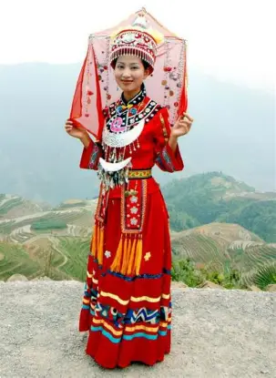
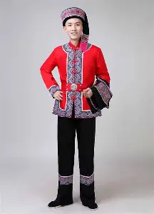
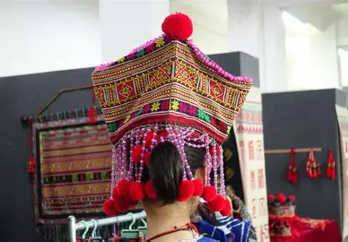
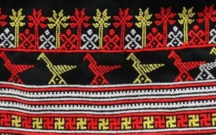

瑶族文化介绍
瑶族是中国南方的古老民族，主要分布在广西、湖南、云南、广东、四川、贵州等省区，其中广西瑶族自治区是瑶族人口最多的省区。瑶族有着悠久的历史和独特的文化，其文化深受中国传统文化、苗族文化、壮族文化等周边民族文化的影响，同时保持着自己独特的民族特色。
瑶族人民勤劳勇敢，擅长农业和手工艺术，有着丰富的民间文学艺术和传统节日。瑶族的语言属于汉藏语系苗瑶语族瑶语支，有着自己的文字——瑶文。
瑶族历史
瑶族的历史可以追溯到古代的蚩尤部落的一支，是中国南方的土著民族之一。
远古时期
瑶族的先民是远古蚩尤部落的一支，居住在今湖南、湖北、江西一带，与中国中原商周时期保持着密切联系。
秦汉时期
瑶族地区先后归属于秦朝和汉朝，中央王朝在瑶族地区设置了郡县，加强对瑶族地区的管辖。
宋元明清时期
中央王朝加强对瑶族地区的统治，实行土司制度，瑶族社会得到进一步发展。
近现代
1949年后，瑶族地区实行民族区域自治，成立了多个瑶族自治州、县，瑶族人民的生活水平得到显著提高。
瑶族来源
瑶族的族源可以追溯到古代的蚩尤部落的一支，是中国南方的土著民族之一。
主要来源
- 远古蚩尤部落：瑶族是远古蚩尤部落的后裔，与苗族、畲族等民族有着密切的血缘关系。
- 当地土著：长期居住在南方地区，与当地其他民族融合发展。
- 古代诸族：历史上有部分汉族、苗族等民族的人融合入瑶族。
瑶族的形成是一个多民族融合的过程，在长期的历史发展中，形成了自己独特的民族文化和传统。
瑶族文化
瑶族服装
瑶族服装具有独特的风格和特点，色彩鲜艳，图案精美，反映了瑶族人民的审美观点和生活情趣。
服装特点
- 色彩鲜艳：喜欢使用红、蓝、绿、紫等绚丽的颜色，体现了瑶族人民开朗活泼的性格。
- 图案精美：服装上绣有各种美丽的图案，如花卉、动物、几何图形等，寓意吉祥如意。
- 款式多样：不同地区、不同分支的瑶族服装款式有所不同，体现了瑶族文化的多样性。
- 头饰丰富：瑶族女性喜欢佩戴各种银饰，如银耳环、银项圈、银手镯等，展现了瑶族人民对美的追求。
- 传统工艺：瑶族的刺绣工艺历史悠久，图案精美，是中国传统工艺的重要组成部分。
服装展示

瑶族女性服装：色彩鲜艳，图案精美，佩戴银饰

瑶族男性服装：宽松大方，适合劳动生产

瑶族头饰：工艺精细，造型美观，展现身份

瑶族刺绣：图案精美，工艺精细，体现民族特色
瑶族饮食文化
瑶族饮食文化具有独特的风格和特点，受到南方地区自然环境和生活方式的影响。
饮食特点
- 以大米为主食：南方地区气候温暖湿润，适合种植水稻，瑶族人民以大米为主食。
- 喜欢酸辣口味：南方地区气候潮湿，瑶族人民喜欢吃酸辣食物，有助于祛湿开胃。
- 擅长制作腌制食品：瑶族的腌制食品制作工艺历史悠久，种类繁多，味道鲜美。
- 重视山珍野味：瑶族人民生活在山区，擅长利用山区的自然资源，喜欢吃各种山珍野味。
- 喜欢饮酒：瑶族人民喜欢喝自酿的米酒，是重要的社交活动之一。
传统食品
- 瑶家油茶：瑶族传统饮品，用茶叶、花生、芝麻等食材制作而成，味道香浓，是瑶族人民喜爱的传统饮品。
- 酸肉：瑶族传统食品，将猪肉腌制后发酵而成，味道独特。
- 酸鱼：瑶族传统食品，将鱼腌制后发酵而成，味道酸辣可口。
- 竹筒饭：瑶族传统食品，将米饭和各种食材放入竹筒中蒸煮而成，香气扑鼻。
- 山珍：瑶族人民喜欢吃各种山珍，如香菇、木耳、竹笋等，是瑶族饮食文化的重要组成部分。
瑶族传统节日
瑶族有许多传统节日，这些节日承载着丰富的文化内涵，是瑶族文化的重要组成部分。
主要传统节日
- 盘王节：瑶族最重要的传统节日，是为了纪念瑶族的始祖盘王，主要活动有祭祀、歌舞、耍歌堂等。
- 达努节：瑶族传统节日，又称祖娘节，是为了纪念瑶族的始母密洛陀，主要活动有祭祀、歌舞、体育比赛等。
- 耍歌堂：瑶族传统节日，主要活动有祭祀、歌舞、对歌等，是瑶族人民社交和娱乐的重要场所。
- 晒衣节：瑶族传统节日，每年农历六月初六，瑶族人民会将家中的衣物、棉被等拿出来晾晒，寓意驱邪避灾。
- 春节：与汉族一样，瑶族也过春节，主要活动有贴春联、放鞭炮、走亲访友等。
瑶族文学艺术
瑶族在文学、艺术、音乐、舞蹈等方面有着独特的成就，对中国文化的发展做出了重要贡献。
文学成就
- 《盘王歌》：瑶族传统史诗，记载了瑶族始祖盘王的传说故事，是瑶族文化的重要组成部分。
- 《密洛陀》：瑶族传统史诗，记载了瑶族始母密洛陀创造人类的故事，具有浓郁的民族特色。
- 民间故事：瑶族有着丰富的民间故事，如《长发妹》、《金龟》等，具有浓郁的民族特色和艺术感染力。
艺术成就
- 长鼓舞：瑶族传统舞蹈形式，舞者手持长鼓，边唱边跳，节奏明快，气氛热烈。
- 铜鼓舞：瑶族传统舞蹈形式，舞者手持铜鼓，边唱边跳，节奏明快，气氛热烈。
- 刺绣工艺：瑶族传统工艺，图案精美，工艺精细，体现了瑶族人民的审美观点和生活情趣。
- 银饰工艺：瑶族传统工艺，工艺精细，造型美观，是瑶族文化的重要组成部分。
瑶族对中国文化的影响
瑶族文化是中华文化的重要组成部分，对中国文化的发展产生了重要影响。
- 文学艺术：瑶族的民间文学艺术，如神话传说、民间故事、音乐舞蹈等，丰富了中国文学艺术的宝库。
- 工艺技术：瑶族的刺绣、银饰等传统工艺，丰富了中国传统工艺的内容。
- 饮食文化：瑶族的饮食文化，如油茶、竹筒饭等，丰富了中国饮食文化的多样性。
- 风俗习惯：瑶族的一些风俗习惯，如热情好客、重视家庭等，与汉族等其他民族的风俗习惯相互影响，共同构成了中国人民的传统美德。